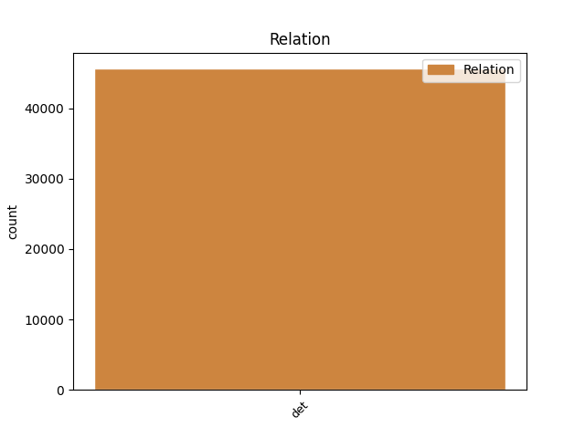
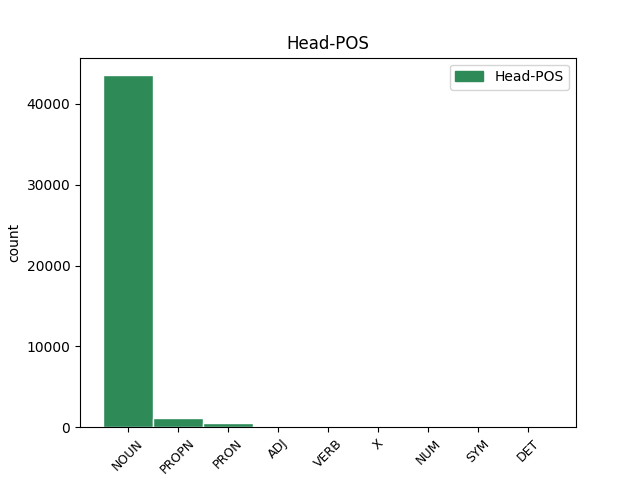
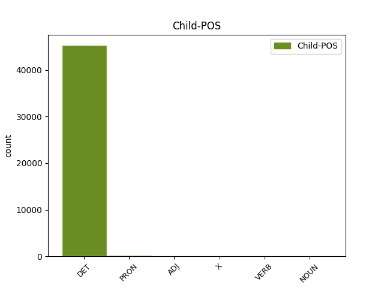

Distribution of features within this leaf



Agreement Rules sorted by frequency.
- When the dependent token is the determiner(det) of the head token,
1 En _ _ _ _ 0 _ _ _
2 1991 _ _ _ _ 0 _ _ _
3 , _ _ _ _ 0 _ _ _
4 como _ _ _ _ 0 _ _ _
5 ya _ _ _ _ 0 _ _ _
6 está _ _ _ _ 0 _ _ _
7 indicado _ _ _ _ 0 _ _ _
8 en _ _ _ _ 0 _ _ _
9 el _ _ _ _ 0 _ _ _
10 párrafo _ _ _ _ 0 _ _ _
11 anterior _ _ _ _ 0 _ _ _
12 , _ _ _ _ 0 _ _ _
13 se _ _ _ _ 0 _ _ _
14 creó _ _ _ _ 0 _ _ _
15 un _ _ _ _ 0 _ _ _
16 equipo _ _ _ _ 0 _ _ _
17 ad _ _ _ _ 0 _ _ _
18 hoc _ _ _ _ 0 _ _ _
19 para _ _ _ _ 0 _ _ _
20 averiguar _ _ _ _ 0 _ _ _
21 como _ _ _ _ 0 _ _ _
22 se _ _ _ _ 0 _ _ _
23 podía _ _ _ _ 0 _ _ _
24 desarrollar _ _ _ _ 0 _ _ _
25 el _ _ _ _ 0 _ _ _
26 Dialogo _ _ _ _ 0 _ _ _
27 Social _ _ _ _ 0 _ _ _
28 , _ _ _ _ 0 _ _ _
29 este _ _ _ _ 0 _ _ _
30 equipo _ _ _ _ 0 _ _ _
31 estaba _ _ _ _ 0 _ _ _
32 formado _ _ _ _ 0 _ _ _
33 por _ _ _ _ 0 _ _ _
34 representantes _ _ _ _ 0 _ _ _
35 de _ _ _ _ 0 _ _ _
36 todas _ _ _ _ 0 _ _ _
37 las el DET _ Definite=Def|Gender=Fem|Number=Plur|PronType=Art 38 det _ _
38 organizaciones organización NOUN _ Gender=Fem|Number=Plur 0 _ _ _
39 relacionadas _ _ _ _ 0 _ _ _
40 con _ _ _ _ 0 _ _ _
41 CES _ _ _ _ 0 _ _ _
42 , _ _ _ _ 0 _ _ _
43 UNICE _ _ _ _ 0 _ _ _
44 y _ _ _ _ 0 _ _ _
45 CEEP _ _ _ _ 0 _ _ _
46 ; _ _ _ _ 0 _ _ _
Disagree Examples:
1 Vuelve _ _ _ _ 0 _ _ _
2 a _ _ _ _ 0 _ _ _
3 salir _ _ _ _ 0 _ _ _
4 con _ _ _ _ 0 _ _ _
5 su _ _ _ _ 0 _ _ _
6 amigo _ _ _ _ 0 _ _ _
7 el _ _ _ _ 0 _ _ _
8 día _ _ _ _ 0 _ _ _
9 de _ _ _ _ 0 _ _ _
10 San _ _ _ _ 0 _ _ _
11 Patricio _ _ _ _ 0 _ _ _
12 y _ _ _ _ 0 _ _ _
13 pasan _ _ _ _ 0 _ _ _
14 la _ _ _ _ 0 _ _ _
15 noche _ _ _ _ 0 _ _ _
16 en _ _ _ _ 0 _ _ _
17 un _ _ _ _ 0 _ _ _
18 pub _ _ _ _ 0 _ _ _
19 donde _ _ _ _ 0 _ _ _
20 años _ _ _ _ 0 _ _ _
21 más _ _ _ _ 0 _ _ _
22 tarde _ _ _ _ 0 _ _ _
23 sabrá _ _ _ _ 0 _ _ _
24 que _ _ _ _ 0 _ _ _
25 también _ _ _ _ 0 _ _ _
26 estuvo _ _ _ _ 0 _ _ _
27 la _ _ _ _ 0 _ _ _
28 madre _ _ _ _ 0 _ _ _
29 de _ _ _ _ 0 _ _ _
30 sus _ _ _ _ 0 _ _ _
31 hijos _ _ _ _ 0 _ _ _
32 , _ _ _ _ 0 _ _ _
33 que _ _ _ _ 0 _ _ _
34 se _ _ _ _ 0 _ _ _
35 deja _ _ _ _ 0 _ _ _
36 allí _ _ _ _ 0 _ _ _
37 un uno DET _ Definite=Ind|Gender=Masc|Number=Sing|PronType=Art 38 det _ _
38 paraguas paragua NOUN _ Gender=Fem|Number=Plur 0 _ _ _
39 amarillo _ _ _ _ 0 _ _ _
40 que _ _ _ _ 0 _ _ _
41 Ted _ _ _ _ 0 _ _ _
42 cogerá _ _ _ _ 0 _ _ _
43 para _ _ _ _ 0 _ _ _
44 resguardar _ _ _ _ 0 _ _ _
45 se _ _ _ _ 0 _ _ _
46 de _ _ _ _ 0 _ _ _
47 la _ _ _ _ 0 _ _ _
48 lluvia _ _ _ _ 0 _ _ _
49 . _ _ _ _ 0 _ _ _
1 Por _ _ _ _ 0 _ _ _
2 último _ _ _ _ 0 _ _ _
3 , _ _ _ _ 0 _ _ _
4 las _ _ _ _ 0 _ _ _
5 comunidades _ _ _ _ 0 _ _ _
6 con _ _ _ _ 0 _ _ _
7 mayor _ _ _ _ 0 _ _ _
8 número _ _ _ _ 0 _ _ _
9 de _ _ _ _ 0 _ _ _
10 hipotecas _ _ _ _ 0 _ _ _
11 canceladas _ _ _ _ 0 _ _ _
12 registralmente _ _ _ _ 0 _ _ _
13 por _ _ _ _ 0 _ _ _
14 cada cada DET _ Number=Sing|PronType=Tot 17 det _ _
15 cien _ _ _ _ 0 _ _ _
16 mil _ _ _ _ 0 _ _ _
17 habitantes habitante NOUN _ Number=Plur 0 _ _ _
18 son _ _ _ _ 0 _ _ _
19 Murcia _ _ _ _ 0 _ _ _
20 ( _ _ _ _ 0 _ _ _
21 144 _ _ _ _ 0 _ _ _
22 ) _ _ _ _ 0 _ _ _
23 , _ _ _ _ 0 _ _ _
24 La _ _ _ _ 0 _ _ _
25 Rioja _ _ _ _ 0 _ _ _
26 ( _ _ _ _ 0 _ _ _
27 118 _ _ _ _ 0 _ _ _
28 ) _ _ _ _ 0 _ _ _
29 y _ _ _ _ 0 _ _ _
30 la _ _ _ _ 0 _ _ _
31 Comunidad _ _ _ _ 0 _ _ _
32 Valenciana _ _ _ _ 0 _ _ _
33 ( _ _ _ _ 0 _ _ _
34 113 _ _ _ _ 0 _ _ _
35 ) _ _ _ _ 0 _ _ _
36 , _ _ _ _ 0 _ _ _
37 además _ _ _ _ 0 _ _ _
38 de _ _ _ _ 0 _ _ _
39 Melilla _ _ _ _ 0 _ _ _
40 ( _ _ _ _ 0 _ _ _
41 118 _ _ _ _ 0 _ _ _
42 ) _ _ _ _ 0 _ _ _
43 . _ _ _ _ 0 _ _ _
1 Se _ _ _ _ 0 _ _ _
2 inicia _ _ _ _ 0 _ _ _
3 la _ _ _ _ 0 _ _ _
4 construcción _ _ _ _ 0 _ _ _
5 de _ _ _ _ 0 _ _ _
6 el _ _ _ _ 0 _ _ _
7 antiguo _ _ _ _ 0 _ _ _
8 templo _ _ _ _ 0 _ _ _
9 de _ _ _ _ 0 _ _ _
10 Nuestra nuestro DET _ Gender=Fem|Number=Plur|Person=1|Poss=Yes|PronType=Prs 11 det _ _
11 Señora señora PROPN _ Gender=Fem|Number=Sing 0 _ _ _
12 de _ _ _ _ 0 _ _ _
13 Guadalupe _ _ _ _ 0 _ _ _
14 . _ _ _ _ 0 _ _ _
1 No _ _ _ _ 0 _ _ _
2 empleamos _ _ _ _ 0 _ _ _
3 potenciadores _ _ _ _ 0 _ _ _
4 de _ _ _ _ 0 _ _ _
5 sabor _ _ _ _ 0 _ _ _
6 ni _ _ _ _ 0 _ _ _
7 ningún _ _ _ _ 0 _ _ _
8 artificio _ _ _ _ 0 _ _ _
9 culinario _ _ _ _ 0 _ _ _
10 que _ _ _ _ 0 _ _ _
11 pueda _ _ _ _ 0 _ _ _
12 alterar _ _ _ _ 0 _ _ _
13 nuestra nuestro DET _ Gender=Fem|Number=Plur|Person=1|Poss=Yes|PronType=Prs 14 det _ _
14 filosofía filosofía NOUN _ Gender=Fem|Number=Sing 0 _ _ _
15 de _ _ _ _ 0 _ _ _
16 " _ _ _ _ 0 _ _ _
17 comida _ _ _ _ 0 _ _ _
18 que _ _ _ _ 0 _ _ _
19 cocinan _ _ _ _ 0 _ _ _
20 las _ _ _ _ 0 _ _ _
21 mamas _ _ _ _ 0 _ _ _
22 y _ _ _ _ 0 _ _ _
23 abuelas _ _ _ _ 0 _ _ _
24 griegas _ _ _ _ 0 _ _ _
25 " _ _ _ _ 0 _ _ _
26 . _ _ _ _ 0 _ _ _
1 Él _ _ _ _ 0 _ _ _
2 se _ _ _ _ 0 _ _ _
3 arrodillo _ _ _ _ 0 _ _ _
4 , _ _ _ _ 0 _ _ _
5 pero _ _ _ _ 0 _ _ _
6 UL _ _ _ _ 0 _ _ _
7 le _ _ _ _ 0 _ _ _
8 dijo _ _ _ _ 0 _ _ _
9 que _ _ _ _ 0 _ _ _
10 no _ _ _ _ 0 _ _ _
11 era _ _ _ _ 0 _ _ _
12 su su DET _ Number=Sing|Person=3|Poss=Yes|PronType=Prs 13 det _ _
13 dios dio NOUN _ Gender=Masc|Number=Plur 0 _ _ _
14 , _ _ _ _ 0 _ _ _
15 pero _ _ _ _ 0 _ _ _
16 le _ _ _ _ 0 _ _ _
17 trató _ _ _ _ 0 _ _ _
18 como _ _ _ _ 0 _ _ _
19 tal _ _ _ _ 0 _ _ _
20 . _ _ _ _ 0 _ _ _